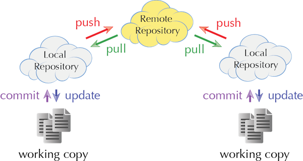
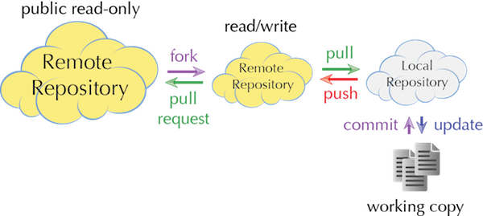
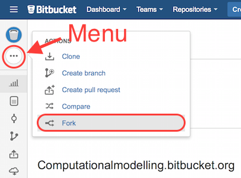
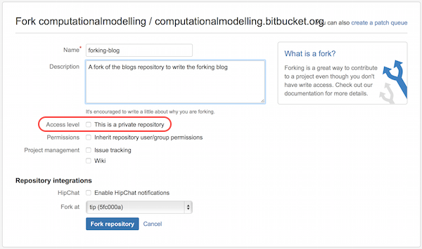
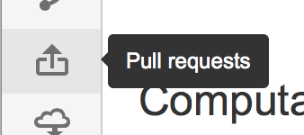
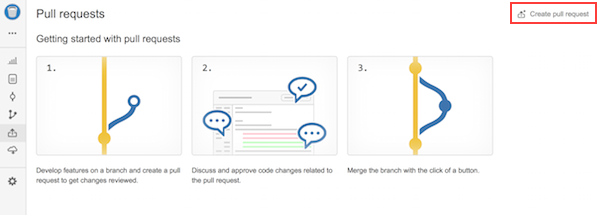

Distributed Version Control 101
We have touched upon version control when discussing the issue of accessing the blog repository whilst working with Pelican. You cloned the blog repository onto your local disc. The fact that you copy the entire repository when issuing
hg clone <url of remote repository>
is the essence of distributed version control. This is markedly different from version control tools like SVN or CVS (if you are old enough to remember that), where the working copy is directly obtained from a central repository. The distributed character adds complexity and a slew of terms that is best explained with this figure.

Change-sets are pulled into the local repository and pushed back to the remote repository. Your changes to the working copy are committed to the local repository, and an update is needed for the latest changes to be reflected in your working copy.
Maintaining a local repository as an intermediary might appear superfluous and overly complex. It, however, brings two advantages:
- Committing to a local repository is fast, encouraging frequent and fine-grained commits.
- Repository replication adds redundancy making unrecoverable data loss unlikely even if the remote repository is compromised.
A normal workflow will see you editing your files and frequently committing them to your local repository.
Pushing back
Once in a while you should feed your work back into the remote repository for others to benefit. If you have write access to the remote repository, this is easily achieved via
If you are denied write access, you can only hope that the maintainer of the remote repository accepts your request to pull your changes into the remote repository.
Forks
Forks are not a concept of mercurial or git. They are part of mercurial/git hosting services. You can fork a publicly hosted repository on bitbucket, which will create a copy of the remote repository in your account.

Having full control over the forked repository, you can push into it and share it with a team. The forked repository is independent of the repository it was forked from. Particularly, changes to the parent repository are not automatically propagated.
Once you wish your changes to be accepted in the parent repository, you send a pull request to the maintainer. The maintainer of the parent repository will review your changes and then accept/reject your request.
Forking the blogs repository
Note: Make sure to have a bitbucket.org account before attempting to fork the blog repository.

- The following dialog allows to give the forked repository a name and description; it also allows to declare the forked repository as private if you want.

You now have a repository that is completely independent of the parent repository. You have full control over access rights etc.
Sending your changes back to the blogs repository
Once you are finished with your blog and have updated your forked repository, you can ask us to accept your blog into the blogs repository by sending a pull request.
- Click on pull request in the sidebar to open the pull request dialog

- The displayed webpage gives you a quick intro into forking and pull requests. To generate a pull request, you need to press the rather subtile button in the top right corner.

- The upcoming dialog allows you to give the pull request a title and description. You can also decide if you want to close the repository once it has been merged back into the parent repository. To send your work off, press the “Create Pull Request” button and wait for us to approve or discuss your request.